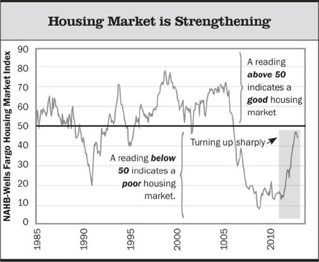

Newsletter
First Quarter 2013
Key Takeaways:
U.S. stocks posted a robust 10.6% gain in the first quarter, beating both developed international stocks—which overcame ongoing issues in Europe to return 3.8%—and emerging-markets stocks, which lost 3.5%. Meanwhile, the broad bond-market benchmark Barclays Aggregate Bond Index was nearly flat.
Supported by an accommodative Federal Reserve, U.S. economic fundamentals have continued to grudgingly improve. Unemployment is slowly falling, home prices have been rising, and corporate earnings and profitability are near record highs. Fed actions have also continued to support—and drive—strong U.S. stock market gains.
Looking ahead, significant uncertainty surrounds fiscal and monetary policy in terms of what policies will be adopted and their ultimate economic and financial market impacts. High global debt levels continue to pose an economic headwind.
We continue to find emerging-markets stocks attractive, both relative to U.S. stocks and in absolute terms over a five-year time horizon.
Most parts of the bond market offer paltry longer-term return potential particularly given our expectation for rising rates over a five-year investment horizon. We continue to favor highly-flexible, actively managed, bond funds.
Investment Commentary
What Now for U.S. Stocks?
With U.S. stocks hitting new highs, we are naturally getting two questions from clients:
- With stocks up so much, shouldn’t we reduce our exposure (to lock in gains, given all of the big picture risks)?
- With stocks up so much, shouldn’t we increase our exposure (since the economy must be much better than people expected)?
Our short answer to both questions right now is, no. Our assessment of the potential risks and returns for stocks is based on looking across a range of scenarios that we think are at least reasonably likely to play out. Additionally, we are carefully considering more extreme negative scenarios that we believe carry a lower probability, but nevertheless hold serious negative implications (at least over the shorter term) for risky assets like stocks.
We believe there is an unusually wide range of possible outcomes for economic fundamentals and hence the U.S. stock market. This range includes some positive scenarios for U.S. stocks (with annualized returns in the low double digits), as well as some severely negative outcomes as the U.S. and the entire global economy works through the aftermath of the financial/debt crisis of 2008. As a result of our current outlook, we are currently more concerned with ensuring broad diversification rather than trying to time when to buy or sell stocks. We don’t think making a big bet on an outcome that can’t be determined with confidence is in the best interests of our clients. We are currently constructing portfolios that we believe should perform reasonably well across a range of potential outcomes, any one of which we believe has reasonable odds of actually playing out.
The Environment: Policy Uncertainty and Modestly Improving Economic Fundamentals
A major contributor to the uncertainty we face in today’s environment surrounds government policy, both fiscal and monetary, specifically what policies will be adopted as well as their ultimate economic impacts. With respect to fiscal policy, in the first quarter the markets digested the sequester’s spending cuts without much drama. But the sequester’s impact (estimated at around a 0.6% hit to GDP growth in 2013) is small potatoes compared to the debt and fiscal policy challenges that still confront the nation. Although we would agree that there is not an immediate federal budget deficit crisis, and that there is a real risk of snuffing out what remains a weak economic recovery with too much near-term fiscal austerity, there is clearly a debt/deficit crisis, at least in the medium to longer term, given the mismatch between federal revenue and spending. This calls for a strong and credible longer-term fiscal policy response, and the sooner the better. We won’t hold our breath, but maybe our political leaders in Washington are starting to get the message. If so, that could be a major positive catalyst for both the financial markets and the real economy. On the other hand, it may yet take a crisis to create the political will necessary to implement meaningful structural fiscal changes.
On the monetary policy side, there is more clarity at least in terms of the policies already in place. The leadership of the Federal Reserve (Chairman Ben Bernanke and Vice Chair Janet Yellen, among others) continue to be very vocal in stating that the Fed is not close to starting to unwind their stimulative policies, which involve purchasing $85 billion per month of Treasury bonds and mortgage-backed securities (quantitative easing) and holding the federal funds policy rate near zero percent. But there is significant uncertainty as to the medium to longer-term ramifications and unintended consequences of these policies and whether or not the Fed’s ultimate exit plan will be executed successfully and without collateral damage. Based on the Fed’s historical record of policy overshooting—and just the inherent complexity of the task at hand for anyone to get it right without a lot of luck—leaves most investors, including us, are skeptical.
In the meantime, Fed statements and actions continue to be an important support and driver of short-term stock market performance. While central bank actions have always influenced the stock market, the markets appear particularly attuned to and reliant on ongoing highly accommodative Fed policy. Again, over the near term, we don’t see any catalyst for Fed policy to become restrictive. So that leg of support to the markets is likely to remain in place. But the uncertainty increases as the time horizon extends, and our confidence in our ability to be “ahead of the market” in assessing a change in Fed policy and repositioning portfolios accordingly is very low.
| The NAHB-Wells Fargo Market Index is a monthly survey based on the responses of the NAHB members. Data as of 28 February 2013. Source: National Association of Home Builders. | Supported by accommodative monetary policy, U.S. economic fundamentals have continued to grudgingly improve. The unemployment rate continues to slowly fall, although that’s partly driven by a particularly sharp drop in the labor force participation rate, meaning there are fewer people working or seeking work, which is not a good thing. The housing market is strengthening, although mortgage lending to households remains tight, and household wealth is growing, driven by stock market and housing price gains—a key goal of the Fed’s QE program. Finally, corporate earnings and profitability are around their all-time highs. (That said, S&P 500 earnings growth in 2012 was actually slightly negative for the year; the market’s 16% return in 2012 came from stock valuations getting richer, not profit growth.) |
Update on Bond Markets and Fixed-Income Positioning
The big-picture bottom-line is that the fixed-income marketplace, particularly the highest quality parts, continues to offer paltry longer-term returns given our expectation for rising interest rates over our five-year investment horizon. Most areas of fixed-income are trading at historically elevated prices, and yield levels are at or near historic lows.
As a result, investors should prepare for much lower bond returns in the upcoming years than have been realized the past 20 years. We fully expect bonds to return to the realm of more normal, single- digit, annual returns as a result of low current interest rates and the prospect of low rates continuing into the next 2-4 years. In spite of lower future returns, we continue to believe that bonds are a valuable investment for diversification purposes and risk reduction. We are currently most interested in actively managed bond portfolios whose managers have the flexibility to span broad segments of the bond universe to find value.
Concluding Comments
Investing is a marathon, not a sprint. The key to investment success is to maintain discipline. We can analyze the longer term with far greater confidence, and invest accordingly, but realizing the benefits demands the discipline to ignore inevitable shorter term gyrations that are impossible to predict with consistency. Succumbing to the temptation to jump into “what’s working” based on a recent run of outperformance is a path to disappointment and subpar long-term investment results.
As always, we will continue to work our hardest to make the best investment decisions we can on your behalf, taking into account your long-term financial goals and the level of risk you can accept.
The Investment Newsletter is mailed quarterly to our clients and friends to share some of our more interesting views. Certain material in this work is proprietary to and copyrighted by Litman/Gregory Analytics and is used by Wilson Financial Advisors, Inc. with permission. Reproduction or distribution of this material is prohibited and all rights are reserved.